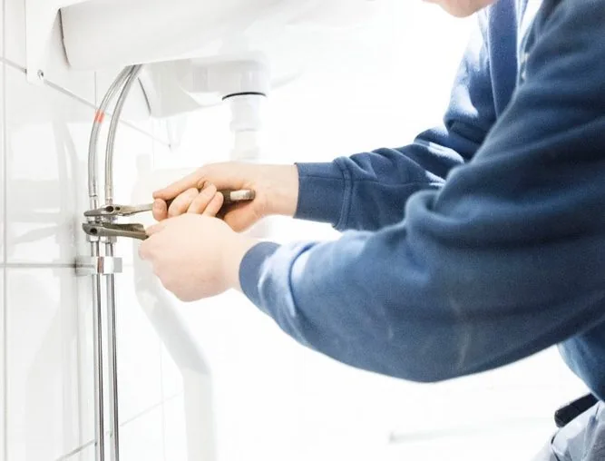
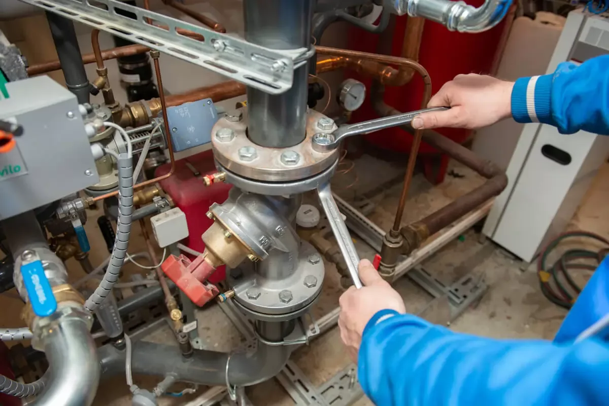
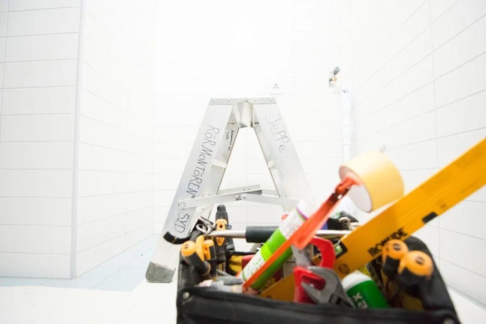

En vardag som fungerar.
Vi hjälper dig med VVS-service, reparationer och nya installationer. Små detaljer eller stora system – vi tar oss an båda.

Det lilla jobbet.
Den stora skillnaden.
Vår serviceavdelning hjälper nya och återkommande kunder med allt från blandare och radiatorer till pannor, värme- och kylsystem. Vi arbetar för privatpersoner, företag, fastighetsägare, kommuner och bostadsrättsföreningar.
Vid nya installationer samordnar våra projektledare och montörer arbetet från start till färdigt resultat.
- Blandare, kranar och radiatorer
- Reparation och felsökning
- Värme- och kylsystem
- Nya VVS-installationer


Vanliga frågor
Hur bokar jag service?
Ring Malmö på 040-44 74 40, Lund på 046-25 01 02 eller mejla info@rormontorensyd.se.
Kan jag få en offert?
Ja. Hör av dig med en beskrivning av uppdraget. Arbeten kan erbjudas till fast pris eller på löpande räkning enligt överenskommelse. Se även våra allmänna villkor.
Hjälper ni till med läcksökning?
Ja, våra utbildade Sluta Riv-tekniker arbetar med utrustning som hjälper oss att lokalisera läckor och begränsa onödiga ingrepp. Läs mer om läcksökning.
Vad kan vi
hjälpa dig med?
Ett mindre jobb hemma eller ett större projekt? Berätta vad du behöver, så tar vi det därifrån.
Alla kontaktuppgifter